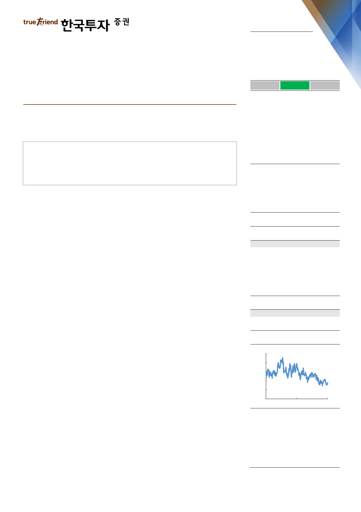

실적 Review
2019. 2. 27
팬오션(028670)
하 회
부 합
영업이익의 컨센서스 대비를 의미
상 회
시황 회복 기다려보기에 부담없는 저평가
매수(유지)
4분기 영업이익은 벌크해운 시황 부진으로 전분기대비 9% 감소
시황 불확실성 높고 일회성 악재 겹쳐 1분기 이익 기대감 낮지만
환경규제에 따른 수급개선까지 길게 보고 투자하기에 편안한 저평가 구간
Facts : 영업이익은 부진했지만 예상했던 수준
4분기 매출액은 6,525억원으로 전년동기대비 9% 늘었지만 영업이익은 524억원
으로 1% 줄었다. 매출액은 컨센서스를 소폭 하회했고 영업이익은 기대에 부합했
다. 4분기는 성수기지만 호주 철광석 열차의 탈선사고 여파로 벌크해운 시황이 크
게 부진했던 탓에, BDI(벌크선 운임지수)는 1,363p로 전분기대비 15% 하락했다.
그 결과 벌크선 매출액과 영업이익은 각각 전분기대비 7%, 11% 감소했다. 컨테
이너선과 탱커 등 비벌크 사업의 수익성은 3분기보다 나아졌지만 여전히 이익기여
도가 5%를 넘지 못할 만큼 부진했다. 특히 컨테이너선은 항로 확대에 따라 매출
액이 29% 증가했지만 어려운 시황을 극복하지 못해 영업마진은 2%에 머물렀다.
Pros & cons : 1분기에도 시황 부진 이어질 전망
실적은 부진했으나 이미 예상했던 수준이었다. 한편으로는 어려운 시황에서 27척
의 장기 운송계약이 뒷받침하는 이익 안정성을 다시 한번 확인할 수 있었다. 다만
BDI는 최근 600p대까지 하락해 1분기 이익에 대한 기대감도 낮춰야 할 것이다.
미중 무역분쟁, 중국의 석탄수입 부진 등 수요 전망에 대한 우려가 부각된 비수기
상황에서 철광석 업체인 발레의 브라질 댐 붕괴라는 악재까지 더해졌다. 현재까지
1분기 평균 BDI는 전년동기보다 25% 낮다. 다만 하반기부터는 기저효과와 함께
내년 환경규제 강화에 따른 공급 감소요인이 나타나 시황은 다시 개선될 전망이다.
Action : 어려운 시황 속 팬오션의 안전성과 저평가 매력에 주목
예상할 수 있는 대부분의 악재가 터진 상황이다. 반대로 보면 저평가 매력이 부각
되는 시점이라 팬오션에 대해 ‘매수’ 의견을 유지한다. 현 주가는 2019F PBR 0.9
배에 불과하다. 중장기 그림은 수급개선에 따른 시황 회복이 예상되며 단기적으로
어려운 시황이 이어지더라도 팬오션은 장기계약이 이익과 주가의 하단을 받쳐주기
때문이다. 해운업계는 2020년 강화되는 IMO 환경규제에 대응하려면 스크러버 장
착 등 비용과 시간이 들 수밖에 없다. 이에 따라 올해 하반기 가동일수가 줄어드는
한편, 경제성 낮은 노후선박에 대한 폐선이 늘 전망이다. 이미 알고 있는 일회성
악재에 대한 우려보다는 구조적인 공급제약 요인이 더 중요하다.
목표주가: 7,000원(유지)
Stock Data
KOSPI(2/26)
주가(2/26)
시가총액(십억원)
발행주식수(백만)
52주 최고/최저가(원)
일평균거래대금(6개월, 백만원)
유동주식비율/외국인지분율(%)
주요주주(%) 하림지주 외 30 인
국민연금
2,227
4,365
2,333
535
6,130/4,155
6,322
45.1/9.5
54.9
5.8
Valuation 지표
PER(x)
PBR(x)
ROE(%)
DY(%)
EV/EBITDA(x)
EPS(원)
BPS(원)
2017A
19.7
1.2
5.8
0.0
10.5
268
4,469
2018F
15.3
0.9
6.2
0.0
9.1
285
4,754
2019F
13.6
0.9
6.5
0.0
8.3
320
5,074
주가상승률
절대주가(%)
KOSPI 대비(%p)
1개월
(7.3)
(9.6)
6개월
(17.3)
(14.4)
12개월
(28.8)
(19.4)
주가추이
(원)
7,000
6,200
5,400
4,600
3,800
3,000
Feb-17
자료: FnGuide
Feb-18
Feb-19
최고운
gowoon@truefriend.com